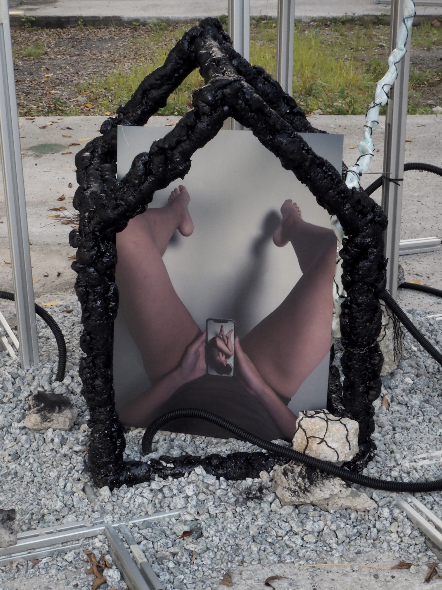
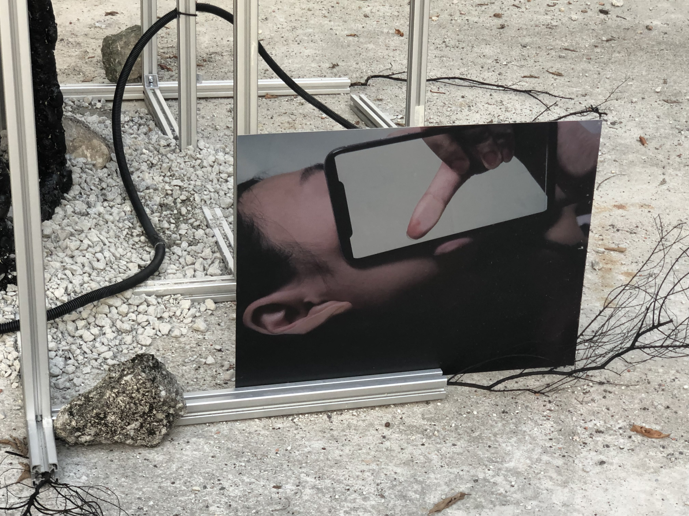
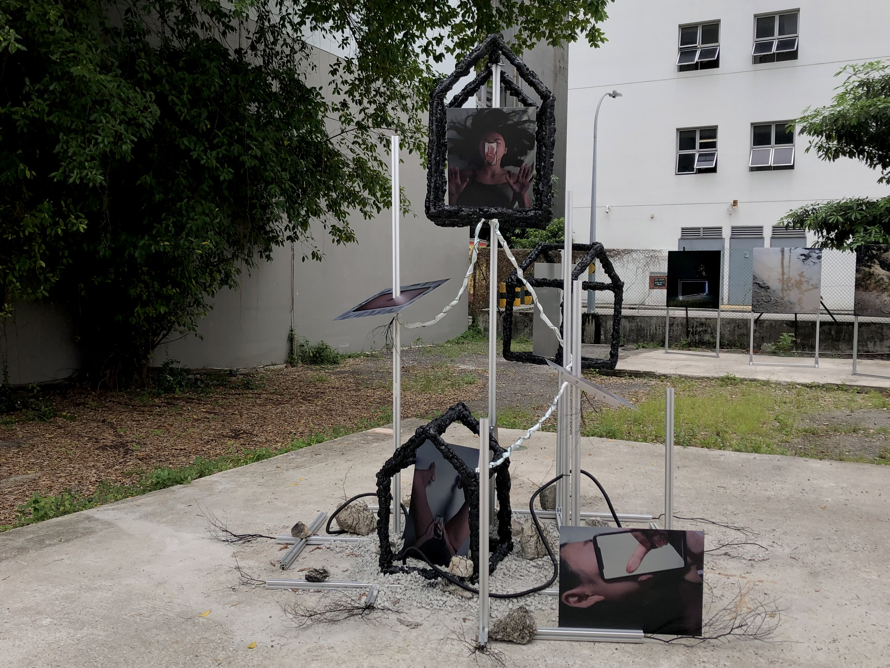
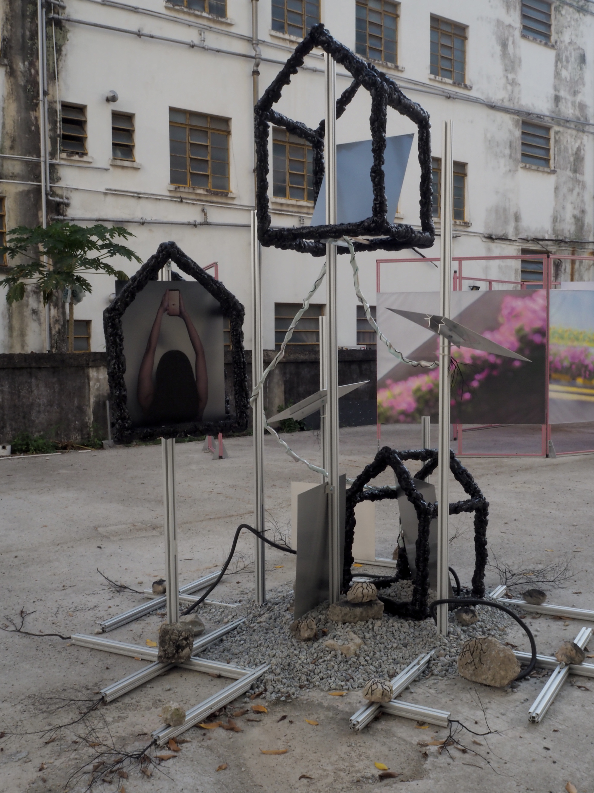

2021 – 2022
photography installation — print on aluminium, latex, rubber hose, rocks, granite gravels, polyurethane foam — model - ZiYue
pSimultaneously marking a new dawn in the technological era and a violent separation from the past, the destined birth of the smartphone is the beginning of humanity’s transcendence into a new age of living. birth of the screen, the obscura, and the multi-touch explores the far-reaching influence of smartphones on our existence. By drawing parallels between the birth of the human and the smartphone, this work seeks to reconsider the intimacy developed between smartphones and its human users.
  